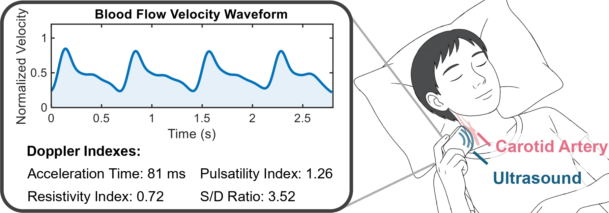
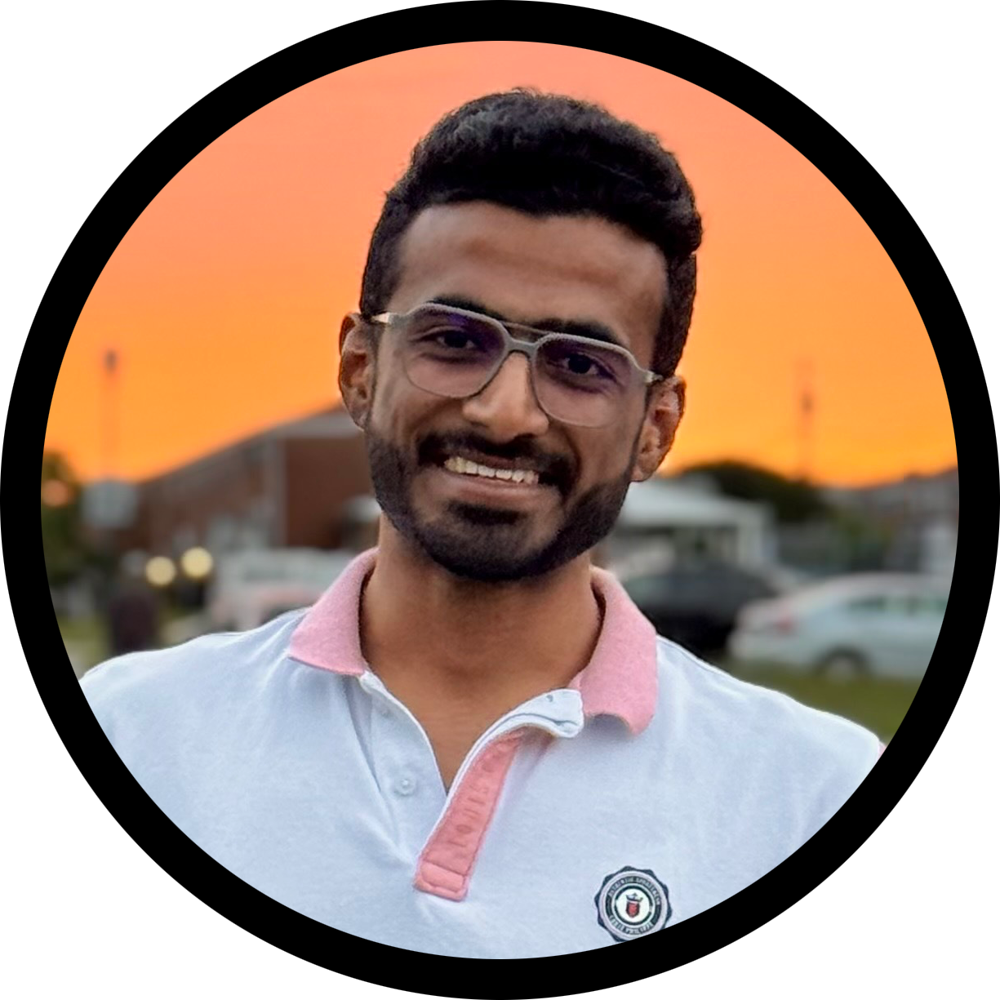
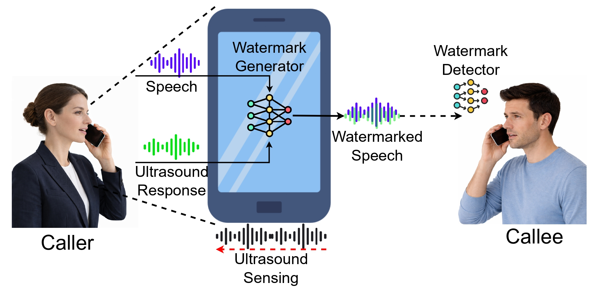

[Emerging Ideas] Phonotonos: Through-Skin Ultrasonic Blood Flow Sensing Using Smartphones
ACM MobiSys 2026

PhD Student in Computer Science
University of Maryland, Baltimore County
Advised by Dr. Dong Li, Future Sensing and Interaction (FSI) Lab
I am a first-year PhD student in Computer Science at the University of Maryland, Baltimore County (UMBC), where I work in the Future Sensing and Interaction (FSI) Lab with Dr. Dong Li. My research develops smartphone-based methods for cardiovascular health sensing, combining digital signal processing, acoustic sensing, and machine learning to bring meaningful health insights to everyday devices.
Before starting my PhD, I spent over five years as a Senior iOS Engineer at Gojek and Nuclei, building large-scale mobile applications used by millions of users. I am especially interested in research that bridges low-level sensing with real-world, deployable mobile systems that reach people who need them.
My current research focuses on smartphone-based physiological sensing for cardiovascular health. Key projects include:
Smartphone-based non-invasive cardiovascular monitoring via ultrasonic Doppler sensing, measuring heart rate, blood pressure, and pulse transit time variability. Supported by the Google Research Scholar Award and UMB ICTR ATIP Grant.
Through-skin ultrasonic blood flow sensing using commodity smartphone speakers and microphones, enabling continuous vascular monitoring without specialized hardware.
Quantifying soft tissue viscoelastic properties via acoustic stimuli for human-machine interaction comfort modeling, in collaboration with the UMBC Mechanical Engineering department.
Extending smartphone audio sampling from 48 kHz to 192 kHz via an external codec without device rooting, enabling high-resolution ultrasonic sensing on commodity devices.

[Emerging Ideas] Phonotonos: Through-Skin Ultrasonic Blood Flow Sensing Using Smartphones
ACM MobiSys 2026

Ultrasound Watermark: Real-Time Acoustic Watermarking for Voice Scam Protection on Smartphones
ACM CCS 2026 Under Review